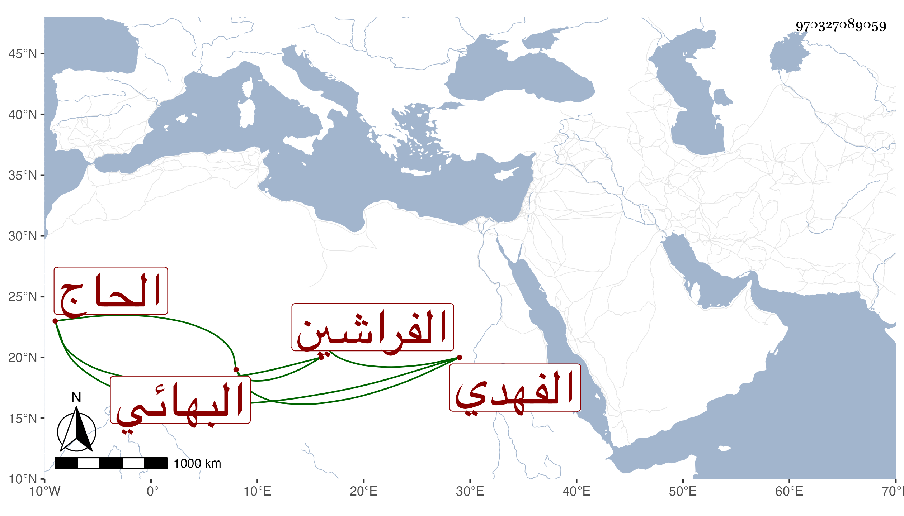

0902Sakhawi.DawLamic.ITO20230111-ara1.EIS1600.970327089059
Biography ID: 970327089059
853
رشيد بن عبد الله الحاج رشيد الدين الفهدي البهائي أحد الفراشين في الحرم النبوي ويعرف . سمع على العز بن جماعة جزءا قرأه عليه الشرف أبو الفتح المراغي في سنة اثنتي عشرة وثمانمائة بمبرك الناقة النبوية من دار أبي أيوب الأنصاري المعروفة بالمدرسة الشهابية ووصفه بالشيخ الصالح الخير .
